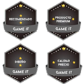
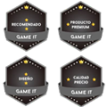

RAZER BASILISK V3 PRO
가장 진보된 최고급 게이밍 마우스
여러분의 게임을 업그레이드해줄 왕의 귀환 Razer Basilisk V3 Pro. 가장 진보된 최고급 게이밍 마우스 Razer Basilisk V3 Pro를 만나보세요. 업계 최고의 기술로 무장한 성능, 커스터마이징, 연결성 및 제어의 한계를 뛰어넘어 최대의 잠재력을 발휘해보세요.
 

예상을 넘어서는 속성, 강력한 성능
| STATS | WHAT IT REPRESENTS | ||
|---|---|---|---|
| STR | 100 | 3세대 Razer 옵티컬 마우스 스위치 | 자세히 알아보기 > |
| AGI | 100 | Razer HyperSpeed Wireless | 자세히 알아보기 > |
| INT | 100 | Razer HyperScroll 틸트 휠 | - |
| VIT | 100(110) | 차세대 무선 충전 | 자세히 알아보기 > |
| DEX | 120 | Razer Focus Pro 30K 센서 | 자세히 알아보기 > |
| CHR | 100 | Razer Chroma RGB | 자세히 알아보기 > |
RAZER™ HYPERSCROLL 틸트 휠
부드러운 프리 스핀 스크롤링 또는 택타일 사이클링
콘텐츠를 빠르게 넘기기 위해 스크롤 휠을 멈출 때까지 자유롭게 회전하거나, 무기 또는 스킬 선택에 이상적인 더 정확하고 확실한 피드백의 택타일 모드로 전환이 가능합니다.
-
택타일 사이클링 모드
매우 정밀하고 독특한 노치 스크롤링으로 무기 또는 스킬을 전환하는 데 이상적입니다.
-
스마트 릴 모드
더 빠르게 스크롤할 때 Razer Synapse를 통해 활성화된 스크롤 휠이 택타일 모드에서 프리 스핀 모드로 자동 전환됩니다.
-
프리 스핀 스크롤링 모드
매끄러운 고속 스크롤링으로 콘텐츠를 신속하게 다루거나 반복되는 게임 명령을 에뮬레이션하는 데 적절합니다.
-
가상의 가속
Razer Synapse 기능을 켜면 더 빠르게 스크롤할 때 마우스 스크롤 속도를 높일 수 있어 길이가 긴 문서와 글을 훨씬 더 빠른 속도로 살펴볼 수 있습니다.
풀 언더글로우를 포함한 13개의 CHROMA 조명 영역
Razer Chroma™ RGB 지원
1,680만 개가 넘는 컬러와 수많은 조명 효과로 각 영역을 커스터마이징하고 수백 가지의 Chroma 연동 게임과 동적으로 반응하며 제공하는 높은 몰입감을 경험하세요.
자세히 알아보기>-
개별 프로그래밍이 가능한 13개의 LED
-
200개 이상의 CHROMA 연동 게임
-
1,680만 색상 옵션
여러 기기 페어링을 지원하는 RAZER™ HYPERSPEED WIRELESS
고성능, 저지연 게이밍
다른 무선 기술보다 25% 더 빠른 속도로 초반응형 게이밍을 선사합니다. 최신 Razer HyperSpeed 주변기기에 적용된 기능으로 무선 마우스와 키보드를 하나의 동글에 연결해서 사용할 수 있어 셋업을 효율적으로 정리하고 더 많은 USB 포트를 활용할 수 있습니다.
자세히 알아보기>인체 공학적 형태
-
프로그래밍 가능한 10+1개 버튼을 지원하는 상징적인 인체공학적 형태
최첨단 인체공학 및 제어전 세계 수백만 명의 사랑을 받는 이 마우스의 시그니처 모양은 다양한 그립을 완벽하게 지원하며, 수많은 버튼에 쉽게 액세스하여 명령과 매크로를 끝없이 조합할 수 있습니다.
-
RAZER™ FOCUS PRO 30K 옵티컬 센서
동급 최고의 정확도업계를 선도하는 Razer의 센서는 지능형 기능으로 뛰어난 조준과 제어를 지원하여 유리 등의 다양한 표면에서 완벽한 트래킹 성능을 자랑합니다.
-
3세대 RAZERTRADE; 옵티컬 마우스 스위치
탁월한 내구성 및 속도의도하지 않은 더블 클릭 문제가 발생하지 않는 우수한 9천만 회의 클릭 수명부터 제로 디바운스 지연을 자랑하는 0.2밀리초의 빠른 작동 속도까지, 다른 어떤 제품보다 안정성과 속도가 뛰어납니다.
차세대 무선 충전으로 업그레이드
RAZER 무선 충전기 및 기타 QI 충전기와 호환 가능
다음 장치(모두 별도 판매)와 페어링하여 끊김 없이 편리하게 충전할 수 있는 Razer Basilisk V3 Pro의 진정한 성능을 경험하세요.
자세히 알아보기 > 지금 구매하기 >-
RAZER 마우스 도크 프로
Razer 무선 충전 리시버 포함
-
RAZER 무선 충전 리시버
Qi 인증을 받은 디자인, 기타 Qi 충전기와 사용 가능

보증 지원
여기에서 최대 2년간의 보증을 획득하고 믿을 수 있는 기술 지원에 액세스하세요. RazerStore에서 직접 구매하면 14일 동안 무료로 반품이 가능합니다.
자주 묻는 질문
-
Razer Basilisk V3 Pro의 폼팩터는 무엇인가요?
Razer Basilisk V3 Pro는 독특하고 인체공학적인 오른손잡이용 설계와 고유한 섬 레스트를 선보여 게이밍시 더 적은 손가락 움직임으로도 부드러운 플리킹이 가능합니다.
-
Razer Basilisk V3 Pro의 버튼 리매핑이나 사용자 설정은 어떻게 하나요?
버튼 매핑이나 매크로, 스크롤 가속, 스마트 릴 기능, 조명 효과 등을 설정하기 위해서는 우선 Razer Synapse 3를 다운로드하여 설치해야 합니다. 그다음, 버튼 관련 정보를 확인하고 사용자 설정을 적용하면 됩니다.
-
Razer Basilisk V3 Pro에는 틸트 스크롤이 있나요?
예. 틸트 스크롤 휠은 마우스의 다른 모든 버튼과 마찬가지로 사용자 설정 기능에 맞게 프로그래밍할 수도 있습니다.
-
Razer HyperSpeed 멀티 디바이스 동글과 호환되는 기기에는 어떤 제품들이 있나요?
Razer Basilisk V3 Pro의 동글에 페어링할 수 있는 키보드는 다음과 같습니다.
-Razer DeathStalker V2 Pro -Razer DeathStalker V2 Pro Tenkeyless -Razer BlackWidow V3 Pro -Razer BlackWidow V3 Mini HyperSpeed -Razer BlackWidow V3 Mini HyperSpeed Phantom Edition
-
Razer Basilisk V3 Pro 하부에 있는 커버 리시버의 기능은 무엇인가요?
사용하지 않을 때 마우스의 무선 동글 보관함을 덮어줍니다.
-
Razer Basilisk V3 Pro는 무선 충전이 어떻게 이루어지나요?
Razer 무선 충전 리시버 또는 Razer 마우스 도크 프로(리시버 포함)를 추가로 구매하면 마우스 커버 리시버를 교체하여 무선으로 충전할 수 있습니다. 일단 무선 리시버가 설치되면 Razer 마우스 도크 프로 또는 다른 Qi 충전 기기 위에 올려놓기만 하면 됩니다. Razer 마우스 도크 프로 및 무선 충전 리시버에 대해 자세히 알아보세요.
-
Razer Basilisk V3 Pro 왼쪽의 다기능 트리거 버튼을 분리할 수 있나요?
버튼을 제거할 수는 없지만 쉽게 액세스할 수 있으며 게임 중에 실수로 잘못 클릭하지 않도록 하는 최적의 위치에 버튼을 배치해 두었습니다.
FOR GAMERS. BY GAMERS.™
FOR GAMERS. BY GAMERS.™